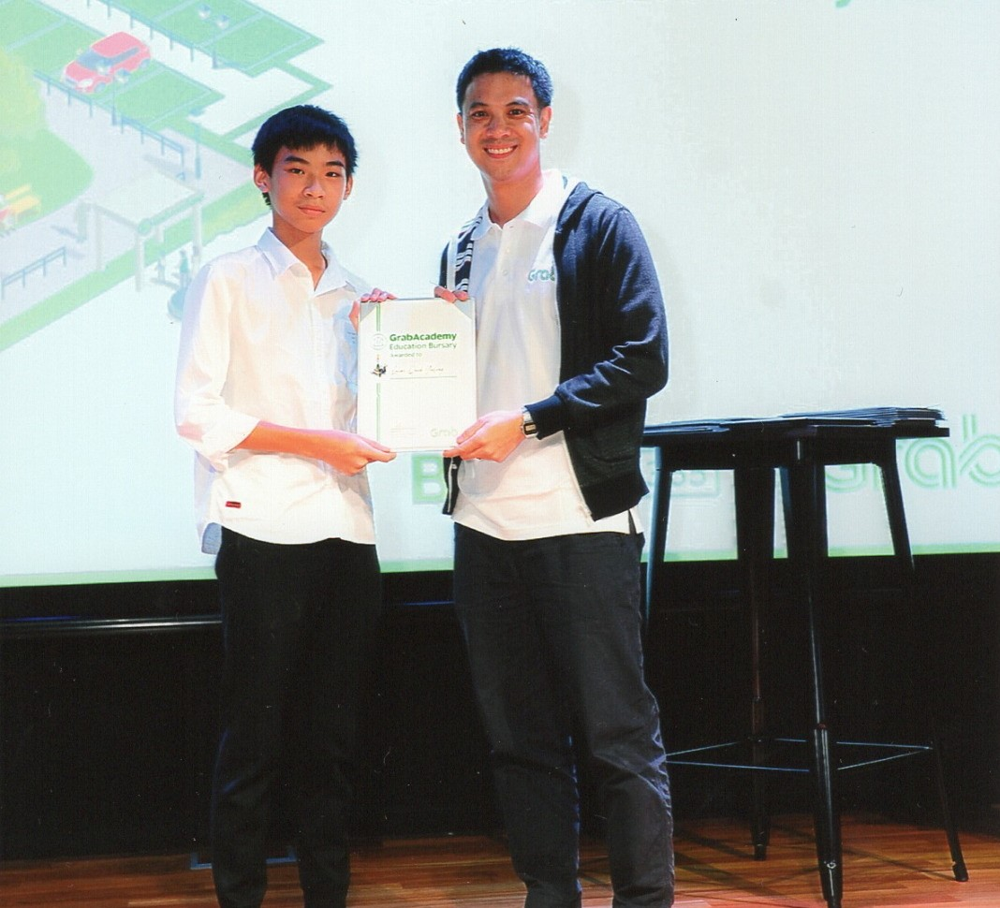
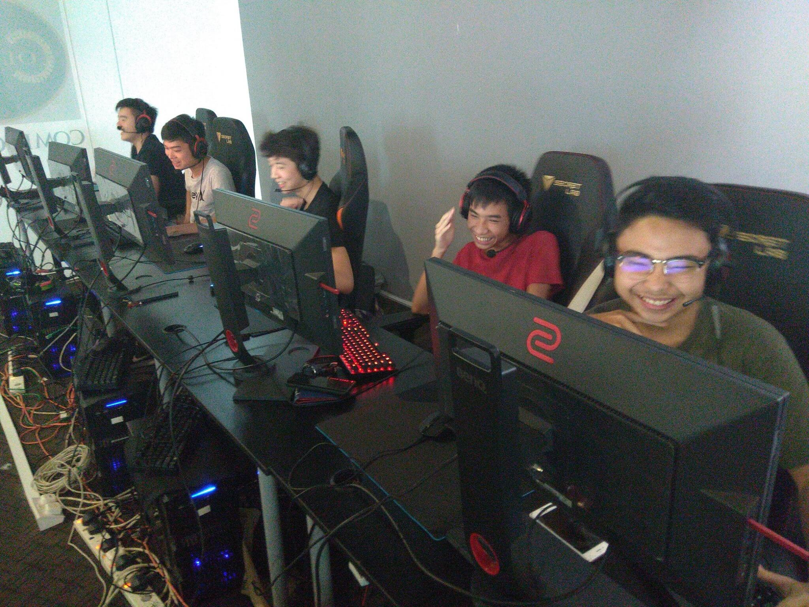

What I enjoy
I'm a Secondary 4 student currently studying at St. Patrick's School taking O-Level computing, chemistry and physics.
I enjoy breaking down problems and solving them by creating simple programs! I also love the freedom that coding brings, with the countless different algorithms that allow us to solve unique issues. If I'm not coding, you'll usually find me doing sports or playing video games.

More about me
When I was young, my father who was in the IT sector, introduced me to the basics of technology, namely about websites and networking. As my interest in gaming developed, he helped me in creating servers for the games that I loved to play, such as TF2 and CSGO. The TF2 server that we managed to create was extremely popular in Asia and was among the top 10 servers in Singapore for a brief period of time. Not long after, we experienced a DDOS attack on our servers, bringing down our home internet. This unfortunate turn of events led us to shut down our servers permanently.
My prior experience with hosting servers peaked my interest in technology and its many aspects. I find myself fascinated and intrigued by depth of technology with its practical uses, inspiring me to want to pursue cybersecurity in the future.

What I do for leisure
I enjoy gaming, cycling and video editing.
- I've enjoy playing video games like osu! Counter-Strike Global Offensive (CSGO). I even participated in a LAN tournament for CSGO and obtained the top 8 position
- Cycling has been a part of my life since Primary School and is still a regular go-to activity for me to relieve stress and exercise
- I picked video editing in Secondary 1 and have done numerous video editing projects for not only my class, but also for my school
My future plans
I aim to have a future in cybersecurity.
- I plan to apply for a DISM (Diploma in Infocomm and Security Management) course in a polytechnic
- I intend on getting a L1R4 of 8 points for my O-levels
- I plan to join a club/volleyball in my next institude of education as my CCA
Positions I've held
I was a CCA head and led numerous VIA projects
- Attained Media and Resource Library Chairperson 2019-2020
- Led from class in 2018 VIA project "Heart for the Environment"
- Led form class in 2019 VIA project on animal abuse alongside SPCA
When I learnt to code